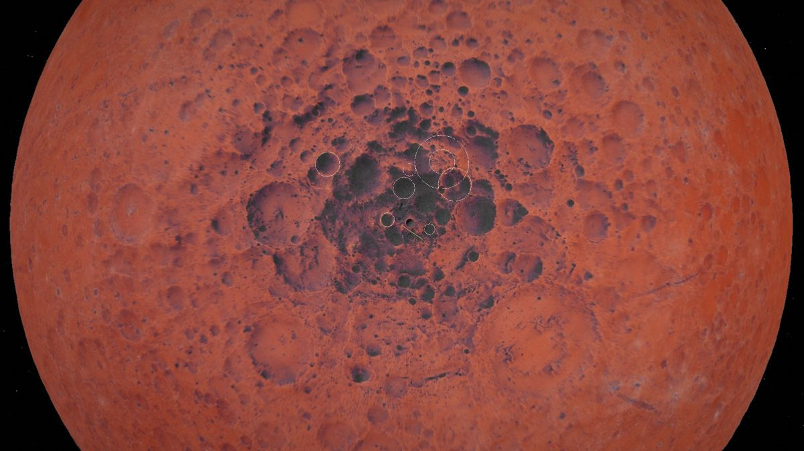
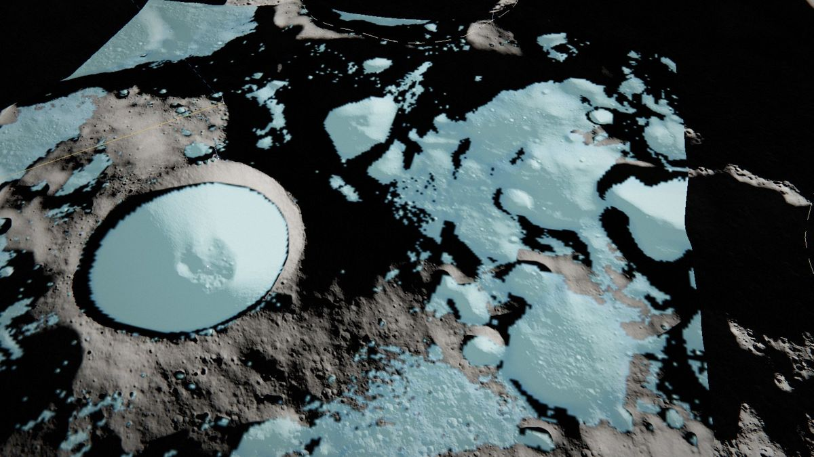
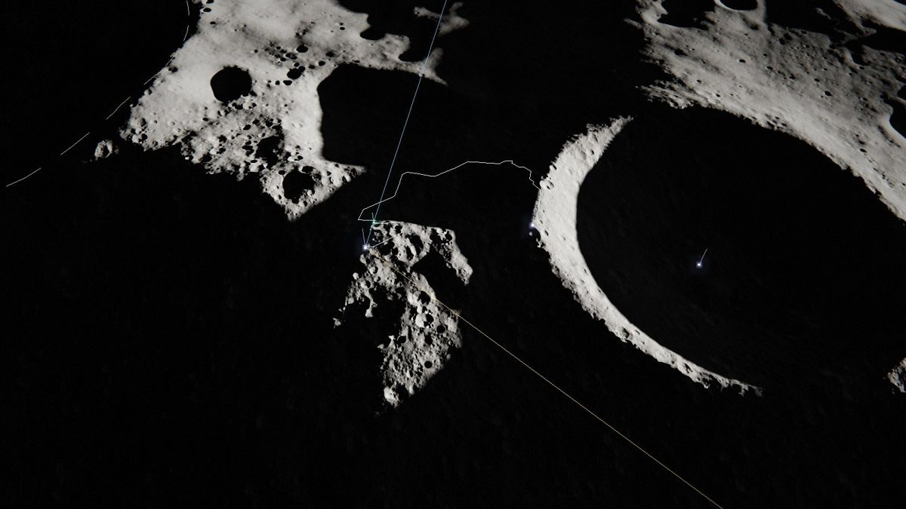

NASA's lunar terrain, the real Sun and Earth for every hour of 2026–2028, and physics on the GPU answer where and when together.
Share of time every spot sees the Sun, sees Earth and has a Deep Space Network dish in view, plus the longest night.
A heat-flow model of the soil runs for every point and shows where water ice stays stable.
Pick a date, mission length and night your battery can survive: it scores 102,400 spots and returns the top 10.
Panels, battery and loads hour by hour, a survival map, and 4,000 simulated touchdowns for the odds of surviving the mission.
Keeps a solar rover in sunlight on drivable slopes as the shadows move, waiting out darkness when it must.
Ranks NASA's nine candidate landing regions for your dates by sunlight, Earth contact, longest night and nearby ice.



| Check | Result |
|---|---|
| Sun and Earth positions vs. NASA JPL Horizons (3 sites, one year) | agree to 0.00003° |
| Sunlight at the five "peaks of light" vs. Bussey et al. 2010 | within 3.7 percentage points on average |
| Equatorial temperature (Apollo 11 site) vs. NASA Diviner | 86–385 K modelled, about 95–390 K measured |
| Shackleton crater floor | below 110 K all year: a cold trap where ice is stable |
The app's Validation window recomputes several of these live and states the limits openly: the terrain is only as sharp as the LOLA data (40 m near the pole), small craters and rocks shown up close are for looks only, and the thermal model leaves out light reflected from nearby slopes.
Compare sites and landing dates for light, Earth contact, temperature and ice, and test a lander or rover plan against the moving shadows before committing to it.
Every number comes from NASA data or a cited model, and is checked against JPL Horizons, published research and NASA's Diviner instrument.
No install and no server: it runs in any browser with WebGL2, on NASA's public-domain data, and the code is open on GitHub.
A one-minute guided tour for newcomers, links that reopen the exact view, and video recording of the 3D scene.
Built for the NASA Space Apps Challenge 2026. NASA data used here is in the public domain. Lunar Window is not affiliated with or endorsed by NASA.